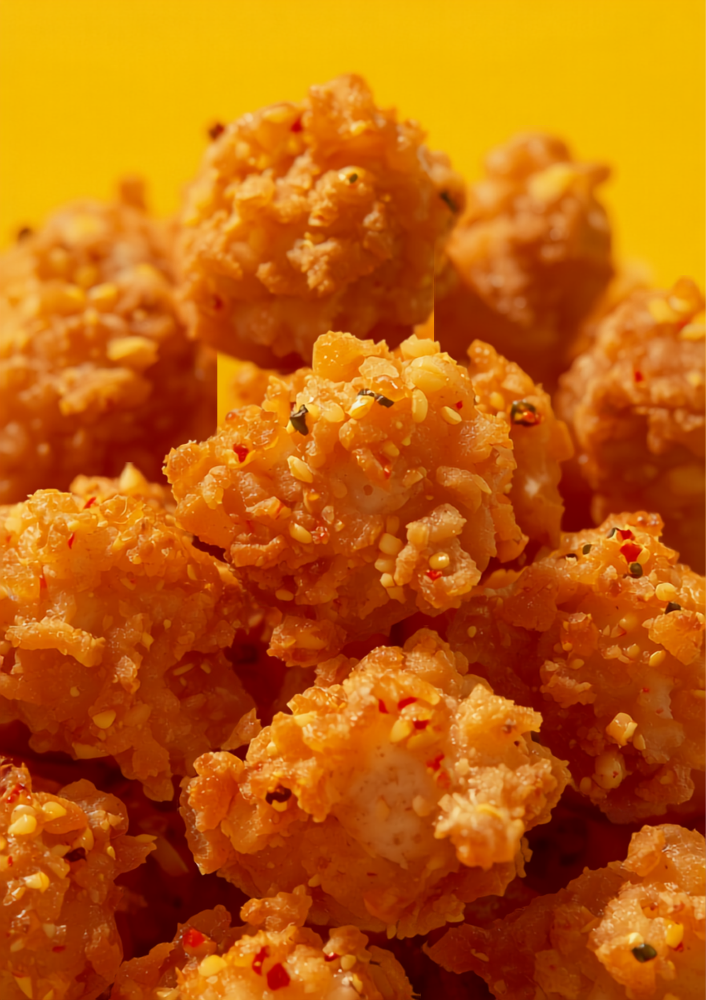

元ホテルバーテンダーが営む、テイクアウトと立ち飲みの唐揚げ専門店。ソースも、生姜も、自家製で。
ABSTRACT: 鶏むね・手羽先を対象に、九州醤油とスパイスの最適配合を日々検証。副産物として、自家製モスコミュールを提供中。

唐揚げも、立ち飲み用の一品も。飽きずに飲める品揃え。
絶妙なスパイシー感で、お酒が進む味。まずはこの一検体から、と常連は言う。
唐揚げと並ぶ看板。つまみに、ちょうどいい。
ここの唐揚げは、本当に美味しい。テイクアウトされる方も多数。
立ち飲み専用のメニューも結構あって、飽きずに飲める。
お店で生姜を漬け込み、自家製のモスコミュールを。元ホテルバーテンダーの一杯は、唐揚げと驚くほど合います。
立ち飲みだから、なんとなく入店できる。店員さんもフレンドリーで、一人でも楽しく過ごせる。常連さんが多いのも、頷けます。
立呑のお店で、からあげ、手羽先どれもおいしかったです。お店で生姜を漬けていて、自家製のモスコミュールも美味しかった！
鶏むねのホットチリだけ頂きましたが、これが大正解。絶妙なスパイシー感でお酒が進む味。店員さんも凄くフレンドリーで、1人でも楽しく過ごせました。
カウンターのみの立ち飲みスタイル。唐揚げをつまみに飲むお店。ここの唐揚げは本当に美味しい。テイクアウトされてる方も多いです。
立ち飲みなので、なんとなく入店OK。
唐揚げをつまみに、研究成果を味わいに。
西新の路地の一角で、お待ちしています。